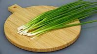

Многолетнее травянистое растение из семейства лилейных, нередко выделяется в самостоятельное семейство луковых. Сорта лука репчатого отличаются прежде всего формой луковиц и окраской сухих чешуй, покрывающих их (чаще всего бывают желтыми, но есть сорта с белыми и фиолетовыми луковицами)
Зелёный лук или салатный лук — торговое и кулинарное наименование некоторых видов рода Allium, у которых в пищу употребляется надземная (травянистая), а не подземная (луковица) часть. Зёленый лук имеет более мягкий вкус по сравнению с луковицей. Под этим названием обычно известны черемша, лук-шалот, лук-порей, скорода и китайский лук. Хотя луковицы многих видов Allium используются в качестве пищи, для «зелёного лука» характерно отсутствие полностью развитой луковицы. Для этих видов характерно наличие полых, трубчатых зелёных листьев, растущих прямо из луковицы. Эти листья используются в качестве овоща; их едят в сыром (целом или нарезанном для салата или в виде приправы) или приготовленном виде